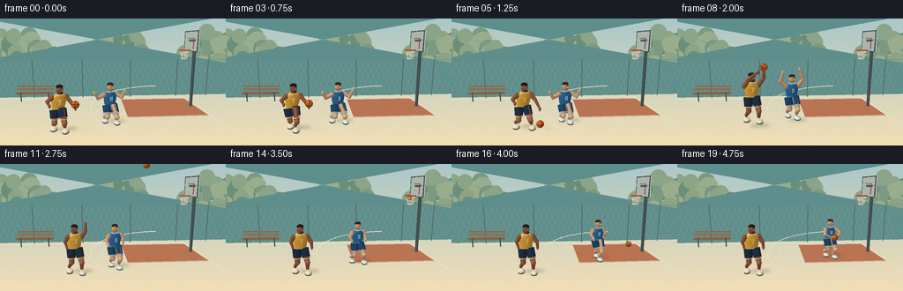
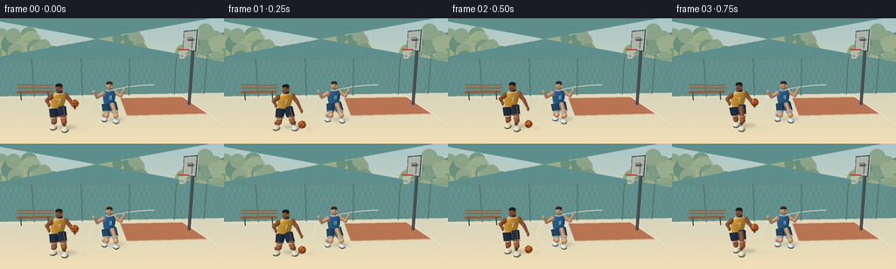

CODING AGENTS AS PIXEL WORLD MODELS
traex/GPT-6.1-Sol · instance_preservation_0035
点击播放 · 原生 RGB 像素
逐轮保存的候选
回放视频、检查图与代码变化。
每份候选均可单独播放。实际图片检查记录在下方工具轨迹中。
候选 01播放与检查图
点击播放 · 原生 RGB 像素

展开代码变化
--- 上一保存版本
+++ 本次保存版本
@@ -0,0 +1,316 @@
+from pathlib import Path
+import math, json
+import numpy as np
+from PIL import Image, ImageDraw, ImageFont, ImageFilter
+import artifact_io
+
+ROOT=Path(__file__).resolve().parent
+SPEC=json.loads((ROOT/'task_spec.json').read_text())
+W,H=SPEC['width'],SPEC['height']; S=3
+C=np.array([0.,3.6,10.5]); T=np.array([.7,1.55,0.]); F=(T-C)/np.linalg.norm(T-C)
+R=np.cross(F,[0,1,0]); R/=np.linalg.norm(R); U=np.cross(R,F)
+SUN=np.array([-.5,.85,.5]); SUN/=np.linalg.norm(SUN)
+faces=[]
+
+def project(p):
+ p=np.asarray(p); v=p-C; d=v@F
+ return np.stack([128+248*(v@R)/d,72-248*(v@U)/d],axis=-1)*S,d
+
+def line3(draw, pts, col, width=1):
+ xy,_=project(pts); draw.line([tuple(p) for p in xy],fill=col,width=max(1,round(width*S)),joint='curve')
+def poly3(draw,pts,col):
+ xy,_=project(pts);draw.polygon([tuple(p) for p in xy],fill=col)
+
+def face(v,col,shade=True):
+ v=np.asarray(v,float)
+ if shade:
+ n=np.cross(v[1]-v[0],v[2]-v[0]); l=np.linalg.norm(n)
+ if l<1e-8:return
+ n=n/l
+ # Two-sided mesh, normals oriented by mesh construction.
+ light=.59+.43*max(0,n@SUN)
+ color=tuple(np.clip(np.array(col)*light+np.array([3,3,5]),0,255).astype(int))
+ else: color=col
+ xy,z=project(v)
+ faces.append((float(np.mean(z)),[tuple(p) for p in xy],color))
+
+def ell(center,radii,color,lat=12,lon=20,basis=None):
+ c=np.array(center); b=np.eye(3) if basis is None else np.asarray(basis)
+ pts=[]
+ for i in range(lat+1):
+ phi=math.pi*i/lat
+ pts.append([c+b@ (np.array([math.sin(phi)*math.cos(2*math.pi*j/lon),math.cos(phi),math.sin(phi)*math.sin(2*math.pi*j/lon)])*radii) for j in range(lon)])
+ for i in range(lat):
+ for j in range(lon):
+ k=(j+1)%lon
+ # order outward
+ face([pts[i][j],pts[i][k],pts[i+1][k],pts[i+1][j]],color)
+
+def tube(a,b,r1,r2,color,n=12):
+ a,b=np.array(a),np.array(b); axis=b-a; axis/=np.linalg.norm(axis)
+ side=np.cross(axis,[0,0,1])
+ if np.linalg.norm(side)<.01:side=np.cross(axis,[1,0,0])
+ side/=np.linalg.norm(side); other=np.cross(axis,side)
+ pa=[a+r1*(math.cos(j*2*math.pi/n)*side+math.sin(j*2*math.pi/n)*other) for j in range(n)]
+ pb=[b+r2*(math.cos(j*2*math.pi/n)*side+math.sin(j*2*math.pi/n)*other) for j in range(n)]
+ for j in range(n):
+ k=(j+1)%n;face([pa[j],pa[k],pb[k],pb[j]],color)
+ face(list(reversed(pa)),color);face(pb,color)
+
+def box(center,size,color):
+ c=np.array(center);x,y,z=np.array(size)/2
+ v=[c+[i*x,j*y,k*z] for i,j,k in [(-1,-1,-1),(1,-1,-1),(1,1,-1),(-1,1,-1),(-1,-1,1),(1,-1,1),(1,1,1),(-1,1,1)]]
+ for ids in [[0,3,2,1],[4,5,6,7],[0,4,7,3],[1,2,6,5],[3,7,6,2],[0,1,5,4]]:face([v[i] for i in ids],color)
+
+def path_tubes(pts,r,col):
+ for a,b in zip(pts,pts[1:]):tube(a,b,r,r,col,7)
+
+def background():
+ sky=np.empty((H*S,W*S,3),np.uint8)
+ for y in range(H*S):
+ t=y/(H*S);sky[y]=np.array([171,200,201])*(1-t)+np.array([243,223,182])*t
+ im=Image.fromarray(sky);d=ImageDraw.Draw(im)
+ # Hazy distant rooftops, no other people.
+ rng=np.random.default_rng(16)
+ for x in range(-10,270,14):
+ hh=int(rng.integers(9,23)); yy=59-hh
+ d.rectangle((x*S,yy*S,(x+19)*S,64*S),fill=(155+hh,169+hh//2,167))
+ for xx in range(x+3,x+16,5):
+ for y in range(yy+4,58,6):d.rectangle((xx*S,y*S,(xx+2)*S,(y+3)*S),fill=(143,161,158))
+ # Rounded painterly foliage.
+ for tx,ty,rr in [(6,37,23),(30,35,21),(51,43,15),(121,38,15),(146,35,19),(244,36,27),(218,43,19)]:
+ d.line((tx*S,ty*S,tx*S,71*S),fill=(102,116,99),width=2*S)
+ for j in range(25):
+ dx,dy=rng.uniform(-rr*.8,rr*.8,2); rad=rng.uniform(5,11)
+ color=[(107,143,122),(123,154,129),(140,164,136),(154,173,141)][j%4]
+ d.ellipse(((tx+dx-rad)*S,(ty+dy-rad)*S,(tx+dx+rad)*S,(ty+dy+rad)*S),fill=color)
+ # Court surface.
+ poly3(d,[[-20,0,-3.3],[20,0,-3.3],[20,0,25],[-20,0,25]],(95,143,140))
+ # Clay colored painted key, perspective.
+ poly3(d,[[1.35,.005,-2.35],[5.35,.005,-2.35],[5.35,.005,.8],[1.35,.005,.8]],(185,116,83))
+ # Fine stable surface grain.
+ arr=np.array(im).astype(np.int16)
+ noise=rng.normal(0,.85,(H*S,W*S,1));arr=np.clip(arr+noise,0,255).astype(np.uint8); im=Image.fromarray(arr);d=ImageDraw.Draw(im)
+ col=(228,224,197)
+ line3(d,[[-8,.01,-2.8],[5.35,.01,-2.8],[5.35,.01,5.2],[-8,.01,5.2]],col,.065*22)
+ line3(d,[[1.35,.02,-2.35],[5.35,.02,-2.35],[5.35,.02,.8],[1.35,.02,.8],[1.35,.02,-2.35]],col,.8)
+ # free throw circle at left edge of lane
+ pts=[[1.35+1.2*math.cos(a),.02,-.775+1.2*math.sin(a)] for a in np.linspace(math.pi/2,3*math.pi/2,70)]
+ line3(d,pts,col,.8)
+ pts=[[4.8+5.25*math.cos(a),.02,-.8+5.25*math.sin(a)] for a in np.linspace(math.pi*.52,math.pi*1.48,120)]
+ line3(d,pts,col,.9)
+ # Chain link boundary behind play, perspective and low contrast.
+ for x in np.arange(-10,8,.35):
+ line3(d,[[x,.12,-3],[x+1.0,2.35,-3]],(131,155,145),.26)
+ line3(d,[[x,.12,-3],[x-1.0,2.35,-3]],(131,155,145),.26)
+ for x in [-7,-4,-1,2,5,7]:line3(d,[[x,0,-3],[x,2.4,-3]],(82,108,104),.85)
+ line3(d,[[-12,2.35,-3],[9,2.35,-3]],(103,130,122),.8)
+ line3(d,[[-12,.1,-3],[9,.1,-3]],(103,130,122),.7)
+ # Empty park bench left, with slatted seat.
+ for zz in [-2.5,-2.36,-2.22]:line3(d,[[-4.8,.48,zz],[-2.7,.48,zz]],(139,98,66),2)
+ for y in [.68,.86]:line3(d,[[-4.8,y,-2.55],[-2.7,y,-2.55]],(143,103,73),2)
+ for x in [-4.55,-2.95]:line3(d,[[x,0,-2.3],[x,.5,-2.3]],(58,77,74),1.2)
+ return im
+
+BASE=background()
+# Jersey surface with real open armholes silhouette represented by a shaped torso.
+def torso(p,waist,lean,col,trim,width):
+ p=np.array(p); waist=np.array(waist)
+ rings=[]
+ profiles=[(0,.23,.135),(.16,.265,.14),(.38,.30,.145),(.51,.255,.13),(.58,.15,.12)]
+ right=np.array([.94,0,-.342]);front=np.array([.342,0,.94])
+ for h,rx,rz in profiles:
+ c=waist+np.array([lean*h,.0+h,0])
+ rings.append([c+right*rx*math.cos(a)*width+front*rz*math.sin(a) for a in np.linspace(0,2*math.pi,25)[:-1]])
+ for i in range(len(rings)-1):
+ for j in range(24):
+ k=(j+1)%24;face([rings[i][j],rings[i+1][j],rings[i+1][k],rings[i][k]],col)
+ # Contrasting jersey hem and collar.
+ c=waist+np.array([lean*.02,.015,0]);pts=[c+right*.236*math.cos(a)*width+front*.14*math.sin(a) for a in np.linspace(0,2*math.pi,29)]
+ path_tubes(pts,.014,trim)
+ c=waist+np.array([lean*.59,.582,0]);pts=[c+right*.151*math.cos(a)*width+front*.125*math.sin(a) for a in np.linspace(0,2*math.pi,29)]
+ path_tubes(pts,.017,trim)
+ return right,front
+
+# Geometry is constructed and lit analytically; no external rendering engines.
+def player(t,who):
+ if who==0:
+ skin=(151,88,55);hi=(166,101,64);jersey=(241,175,55);trim=(251,226,172);short=(32,49,68);shoe=(236,229,203)
+ move=min(t/1.6,1);x=-1.6+.62*move;z=2.15-.32*move
+ crouch=.16+.045*math.sin(t*8) if t<1.5 else .20*(1-min((t-1.5)/.5,1))
+ jump=.32*math.sin(math.pi*(t-1.8)/.7) if 1.8<t<2.5 else 0
+ lean=.13 if t<1.5 else .02
+ gait=math.sin(t*7)*.13 if t<1.5 else .02
+ else:
+ skin=(215,161,117);hi=(232,180,130);jersey=(44,110,162);trim=(176,211,223);short=(32,72,105);shoe=(229,233,222)
+ q=np.clip((t-2.7)/1.8,0,1);q=q*q*(3-2*q)
+ x=.48+.20*min(t/1.6,1)+2.0*q;z=1.40-.12*min(t/1.6,1)-1.28*q
+ crouch=.25 if t<1.65 else .1
+ jump=.27*math.sin(math.pi*(t-1.85)/.65) if 1.85<t<2.5 else 0
+ lean=.02;gait=math.sin(t*9)*(.23 if t>2.7 and t<4.5 else .075)
+ pelvis=np.array([x,1.02-crouch+jump,z]); right=np.array([.94,0,-.342]);front=np.array([.342,0,.94])
+ waist=pelvis+np.array([0,.06,0]); headc=waist+np.array([lean*.7,.77,0])
+ shoulder=waist+np.array([lean*.48,.46,0])
+ # legs, rounded muscles, dark loose shorts and sneakers
+ for s in [-1,1]:
+ hip=pelvis+right*s*.15
+ foot=np.array([x+s*.25+gait*s,.105+jump,z+s*.13-gait*s*.7])
+ knee=(hip+foot)*.5+np.array([.08,-.06,.14+crouch*.75])
+ tube(hip,knee,.13,.10,skin);ell(knee,[.105,.11,.1],hi,8,12)
+ tube(knee,foot+np.array([0,.12,0]),.09,.055,skin)
+ # each shorts leg follows the bent thighs
+ end=hip*.40+knee*.60
+ tube(hip+np.array([0,.035,0]),end,.18,.16,short)
+ tube(end,end+np.array([0,-.03,0]),.163,.164,trim)
+ tube(foot+np.array([0,.10,0]),foot+np.array([0,.23,0]),.060,.067,(229,224,201),10)
+ ell(foot+np.array([.045,-.022,.09]),[.135,.080,.20],shoe,8,16)
+ ell(foot+np.array([.045,-.071,.1]),[.135,.027,.20],(55,67,65),6,14)
+ # shoe lace marks
+ for k in range(3):tube(foot+[0,.045,.08+k*.035],foot+[.115,.045,.08+k*.035],.009,.009,trim,6)
+ torso(pelvis,waist,lean,jersey,trim,1)
+ tube(shoulder+[0,.09,0],headc+[0,-.13,0],.087,.079,skin)
+ ell(headc,[.13,.185,.137],skin,14,22)
+ # Close-cropped black hair / shaped cap, ears and face oriented towards play.
+ look=np.array([.73,0,.68]);side=np.array([.68,0,-.73])
+ for s in [-1,1]:ell(headc+side*s*.127,[.035,.05,.035],hi,8,10)
+ ell(headc+np.array([0,.111,-.017]),[.133,.086,.132],(30,27,24) if who==0 else (49,37,27),10,20)
+ ell(headc+look*.13+[0,-.018,0],[.047,.046,.045],hi,8,12)
+ # eye whites and dark irises, brows, subtle facial hair
+ for s in [-1,1]:
+ eye=headc+look*.12+side*s*.05+np.array([0,.025,0])
+ ell(eye,[.016,.012,.015],(221,219,194),6,8)
+ ell(eye+look*.009,[.008,.009,.008],(32,30,26),6,8)
+ tube(eye+side*-.017+[0,.021,0],eye+side*.018+[0,.024,0],.009,.009,(47,34,26),6)
+ tube(headc+look*.128+side*-.034+[0,-.075,0],headc+look*.128+side*.034+[0,-.075,0],.007,.007,(98,56,42),6)
+ if who==0:
+ ell(headc+look*.077+[0,-.124,0],[.088,.043,.073],(64,42,30),8,12)
+ # Arms have explicit hand, elbow and shoulder trajectories.
+ aL=shoulder-right*.285;aR=shoulder+right*.285
+ if who==0:
+ if t<1.5:
+ ph=(t% .75)/.75
+ hand=aR+np.array([.36,-.40-.16*math.sin(math.pi*ph),.25]);el=aR+[.18,-.20,.10]
+ handL=aL+np.array([-.06,-.26,.17]);elL=aL+[-.15,-.10,.11]
+ elif t<2:
+ q=(t-1.5)/.5
+ hand=waist+np.array([.29,.32+.49*q,.20]);handL=hand+[-.19,.02,.025]
+ el=aR+[.21,-.09+.14*q,.10];elL=aL+[-.09,.04,.17]
+ elif t<2.7:
+ q=min((t-2)/.7,1)
+ hand=shoulder+np.array([.50,.72-.12*q,-.02]);handL=shoulder+[.29,.55-.3*q,.05]
+ el=aR+[.22,.28,-.015];elL=aL+[.21,.32,.06]
+ else:
+ q=min((t-2.7)/.8,1)
+ hand=aR+[.18,.60*(1-q)-.46*q,.03];el=aR+[.16,.21*(1-q)-.23*q,.04]
+ handL=aL+[-.03,-.37,.08];elL=aL+[-.10,-.16,.03]
+ else:
+ if t<1.6:
+ hand=aR+[.36,.13,.12];el=aR+[.23,-.14,.10]
+ handL=aL+[-.39,.12,.15];elL=aL+[-.26,-.13,.08]
+ elif t<2.6:
+ hand=aR+[.06,.72,.05];el=aR+[.22,.28,.02]
+ handL=aL+[-.13,.61,.03];elL=aL+[-.22,.26,.03]
+ elif t<4.3:
+ swing=.17*math.sin(t*9)
+ hand=aR+[.10,-.33,.18+swing];el=aR+[.1,-.16,.06]
+ handL=aL+[-.02,-.33,.18-swing];elL=aL+[-.1,-.17,.08]
+ else:
+ hand=waist+[.31,.07,.24];el=aR+[.21,-.18,.12]
+ handL=waist+[.04,.07,.26];elL=aL+[-.04,-.20,.18]
+ for a,e,h in [(aR,el,hand),(aL,elL,handL)]:
+ ell(a,[.10,.115,.10],skin,8,12)
+ tube(a,e,.088,.067,skin);ell(e,[.069,.072,.069],hi,8,10);tube(e,h,.067,.039,skin)
+ ell(h,[.052,.078,.042],hi,8,12)
+ # A small clustered fingertip silhouette instead of a featureless ball hand.
+ for k in range(3):ell(h+[.016*k-.015,-.05,.004],[.012,.044,.015],hi,6,8)
+ # Small clean jersey number lies on the visible chest.
+ cen=waist+front*.151+np.array([lean*.30,.30,0])
+ # 7 and 11 in geometric cream strokes, painted on jersey.
+ def stroke(a,b):tube(cen+right*a[0]+[0,a[1],0],cen+right*b[0]+[0,b[1],0],.012,.012,trim,6)
+ if who==0:
+ stroke((-.055,.07),(.055,.07));stroke((.055,.07),(-.015,-.09))
+ else:
+ for dx in [-.033,.034]:stroke((dx,.075),(dx,-.09))
+ return pelvis,hand
+
+def hoop(t):
+ # Solid metal stanchion behind the transparent backboard.
+ tube([5.05,0,-.8],[5.05,3.6,-.8],.075,.075,(79,94,90))
+ tube([5.05,3.55,-.8],[4.75,3.55,-.8],.05,.05,(95,110,105))
+ # Board plane perpendicular to direction of the basket.
+ box([4.89,3.52,-.80],[.065,1.0,1.6],(215,227,213))
+ for z in [-1.6,0.0]:tube([4.845,3.02,z],[4.845,4.02,z],.018,.018,(58,81,77))
+ for y in [3.02,4.02]:tube([4.845,y,-1.6],[4.845,y,0],.018,.018,(58,81,77))
+ for z in [-1.11,-.49]:tube([4.84,3.14,z],[4.84,3.66,z],.014,.014,(172,89,57))
+ for y in [3.14,3.66]:tube([4.84,y,-1.11],[4.84,y,-.49],.014,.014,(172,89,57))
+ tube([4.85,3.05,-.8],[4.6,3.05,-.8],.035,.035,(185,68,30))
+ sway=.04*math.sin((t-3.4)*16)*max(0,1-(t-3.4)/.7) if 3.4<t<4.1 else 0
+ # Knotted white net, four woven rings, tapered lower edge.
+ for j in range(12):
+ ang=j*2*math.pi/12
+ pts=[]
+ for k in range(5):
+ r=.23-.025*k;aa=ang+(.10 if k%2 else -.10)
+ pts.append([4.52+r*math.cos(aa)+sway*k/4,3.04-.115*k,-.8+r*math.sin(aa)])
+ path_tubes(pts,.009,(234,230,203))
+ for k in [1,2,4]:
+ r=.23-.025*k
+ pts=[[4.52+r*math.cos(a)+sway*k/4,3.04-.115*k,-.8+r*math.sin(a)] for a in np.linspace(0,2*math.pi,25)]
+ path_tubes(pts,.007,(237,231,205))
+ ring=[[4.52+.25*math.cos(a),3.05,-.8+.25*math.sin(a)] for a in np.linspace(0,2*math.pi,41)]
+ path_tubes(ring,.023,(211,80,31))
+
+def ball_position(t,hand,defhand):
+ if t<1.5:
+ # One orange ball, with continuous parabolic bounces.
+ ph=(t%.75)/.75
+ return np.array([-1.6+.62*min(t/1.6,1)+.70,.145+1.00*(2*ph-1)**2,2.15-.32*min(t/1.6,1)+.24])
+ if t<2:
+ return hand+np.array([.025,.05,.015])
+ start=np.array([-.98+.02*.48+.50,1.02+.06+.46+.72+.25,1.83-.02])
+ goal=np.array([4.52,3.05,-.8])
+ if t<=3.4:
+ q=(t-2)/1.4
+ return start*(1-q)+goal*q+np.array([0,1.7*4*q*(1-q),0])
+ if t<3.95:
+ q=(t-3.4)/.55
+ return goal+np.array([-.20*q,-2.90*q*q,.12*q])
+ if t<4.5:
+ q=(t-3.95)/.55
+ target=np.array([2.9,1.19,.25]);p=np.array([4.32,.15,-.68]);return p*(1-q)+target*q+np.array([0,.72*4*q*(1-q),0])
+ return defhand+np.array([-.10,.02,.0])
+
+def basketball(p,t):
+ r=.145
+ ell(p,[r,r,r],(216,104,31),16,28)
+ # Three curved dark panel seams, rotated as the ball spins.
+ angle=t*3.7;rot=np.array([[math.cos(angle),-math.sin(angle),0],[math.sin(angle),math.cos(angle),0],[0,0,1]])
+ for typ in range(3):
+ pts=[]
+ for a in np.linspace(0,2*math.pi,61):
+ if typ==0:v=np.array([math.cos(a),math.sin(a),0])
+ elif typ==1:v=np.array([0,math.cos(a),math.sin(a)])
+ else:v=np.array([math.cos(a),.38*math.sin(a),.925*math.sin(a)])
+ pts.append(p+rot@v*(r+.0015))
+ path_tubes(pts,.0045,(65,43,27))
+
+def shadows(im,centers,ball):
+ lay=Image.new('RGBA',im.size);d=ImageDraw.Draw(lay)
+ for pos,rad,alpha in [(centers[0],.43,62),(centers[1],.41,58),(ball,.15,max(8,int(45/(1+ball[1]))))]:
+ x,y,z=pos
+ # sun projects soft shadows to the lower right, keeping planted feet grounded
+ pts=[[x+.3+rad*math.cos(a),.015,z-.15+.36*rad*math.sin(a)] for a in np.linspace(0,2*math.pi,40)]
+ xy,_=project(pts);d.polygon([tuple(v) for v in xy],fill=(24,48,46,alpha))
+ lay=lay.filter(ImageFilter.GaussianBlur(1.7*S));im.alpha_composite(lay)
+
+frames=[]
+for i in range(SPEC['frames']):
+ t=i/SPEC['fps'];faces=[]
+ p0,h0=player(t,0);p1,h1=player(t,1);bp=ball_position(t,h0,h1)
+ hoop(t);basketball(bp,t)
+ im=BASE.convert('RGBA');shadows(im,[p0,p1],bp);im=im.convert('RGB');d=ImageDraw.Draw(im)
+ for _,xy,color in sorted(faces,key=lambda f:-f[0]):d.polygon(xy,fill=color)
+ im=im.resize((W,H),Image.Resampling.LANCZOS)
+ frames.append(np.asarray(im,dtype=np.uint8))
+artifact_io.save(np.stack(frames),ROOT)
+print('Saved',len(frames),'RGB frames.')
候选 02播放与检查图
点击播放 · 原生 RGB 像素


展开代码变化
--- 上一保存版本
+++ 本次保存版本
@@ -85,7 +85,7 @@
color=[(107,143,122),(123,154,129),(140,164,136),(154,173,141)][j%4]
d.ellipse(((tx+dx-rad)*S,(ty+dy-rad)*S,(tx+dx+rad)*S,(ty+dy+rad)*S),fill=color)
# Court surface.
- poly3(d,[[-20,0,-3.3],[20,0,-3.3],[20,0,25],[-20,0,25]],(95,143,140))
+ poly3(d,[[-30,0,-3.3],[30,0,-3.3],[30,0,9],[-30,0,9]],(95,143,140))
# Clay colored painted key, perspective.
poly3(d,[[1.35,.005,-2.35],[5.35,.005,-2.35],[5.35,.005,.8],[1.35,.005,.8]],(185,116,83))
# Fine stable surface grain.
@@ -271,7 +271,7 @@
goal=np.array([4.52,3.05,-.8])
if t<=3.4:
q=(t-2)/1.4
- return start*(1-q)+goal*q+np.array([0,1.7*4*q*(1-q),0])
+ return start*(1-q)+goal*q+np.array([0,.9*4*q*(1-q),0])
if t<3.95:
q=(t-3.4)/.55
return goal+np.array([-.20*q,-2.90*q*q,.12*q])
候选 03播放与检查图
可观测工具轨迹
实际执行的命令与返回图片。
命令 1exit 0
/bin/bash -lc 'ls -la && cat prompt.txt && cat GENERATION_RULES.md && cat task_spec.json'
命令 2exit 0
/bin/bash -lc 'cat artifact_io.py'
命令 3exit 0
/bin/bash -lc "python - <<'PY' import numpy as np C=np.array([0,4.2,12.0]); T=np.array([.4,1.3,0]); f=(T-C)/np.linalg.norm(T-C); r=np.cross(f,[0,1,0]);r/=np.linalg.norm(r); u=np.cross(r,f) for p in [[-1.5,0,.5],[-1.5,1.9,.5],[.7,0,.3],[3.2,3.8,-1.5],[1.5,4.3,-.3]]: d=np.array(p)-C;print(p,[128+310*d@r/(d@f),72-310*d@u/(d@f)]) PY"
命令 4exit 0
/bin/bash -lc "python - <<'PY' import numpy as np C=np.array([0,3.7,11.5]);T=np.array([.6,1.5,0]); f=(T-C)/np.linalg.norm(T-C);r=np.cross(f,[0,1,0]);r/=np.linalg.norm(r);u=np.cross(r,f) for p in [[-1.6,0,2],[-1.6,1.9,2],[.6,0,1.2],[.6,1.88,1.2],[3.1,3.2,-1.8],[3.1,3.9,-2], [0,3.8,1.5]]: d=np.array(p)-C;print(p,np.round([128+245*d@r/(d@f),72-245*d@u/(d@f)],1)) PY"
命令 5exit 0
/bin/bash -lc "python - <<'PY' import numpy as np C=np.array([0,3.6,10.5]);T=np.array([.7,1.55,0]);f=(T-C)/np.linalg.norm(T-C);r=np.cross(f,[0,1,0]);r/=np.linalg.norm(r);u=np.cross(r,f) for p in [[-1.7,0,2.4],[-1.7,1.95,2.4],[.6,0,1.6],[4.6,3.05,-.8],[4.6,4,-1],[0,4.2,0]]: d=np.array(p)-C;print(p,np.round([128+248*d@r/(d@f),72-248*d@u/(d@f)],1)) PY"
命令 6exit 0
/bin/bash -lc 'fc-list | head'
命令 7exit 0
/bin/bash -lc "cat > generate.py <<'PY'
from pathlib import Path
import math, json
import numpy as np
from PIL import Image, ImageDraw, ImageFont, ImageFilter
import artifact_io
ROOT=Path(__file__).resolve().parent
SPEC=json.loads((ROOT/'task_spec.json').read_text())
W,H=SPEC['width'],SPEC['height']; S=3
C=np.array([0.,3.6,10.5]); T=np.array([.7,1.55,0.]); F=(T-C)/np.linalg.norm(T-C)
R=np.cross(F,[0,1,0]); R/=np.linalg.norm(R); U=np.cross(R,F)
SUN=np.array([-.5,.85,.5]); SUN/=np.linalg.norm(SUN)
faces=[]
def project(p):
p=np.asarray(p); v=p-C; d=v@F
return np.stack([128+248*(v@R)/d,72-248*(v@U)/d],axis=-1)*S,d
def line3(draw, pts, col, width=1):
xy,_=project(pts); draw.line([tuple(p) for p in xy],fill=col,width=max(1,round(width*S)),joint='curve')
def poly3(draw,pts,col):
xy,_=project(pts);draw.polygon([tuple(p) for p in xy],fill=col)
def face(v,col,shade=True):
v=np.asarray(v,float)
if shade:
n=np.cross(v[1]-v[0],v[2]-v[0]); l=np.linalg.norm(n)
if l<1e-8:return
n=n/l
# Two-sided mesh, normals oriented by mesh construction.
light=.59+.43*max(0,n@SUN)
color=tuple(np.clip(np.array(col)*light+np.array([3,3,5]),0,255).astype(int))
else: color=col
xy,z=project(v)
faces.append((float(np.mean(z)),[tuple(p) for p in xy],color))
def ell(center,radii,color,lat=12,lon=20,basis=None):
c=np.array(center); b=np.eye(3) if basis is None else np.asarray(basis)
pts=[]
for i in range(lat+1):
phi=math.pi*i/lat
pts.append([c+b@ (np.array([math.sin(phi)*math.cos(2*math.pi*j/lon),math.cos(phi),math.sin(phi)*math.sin(2*math.pi*j/lon)])*radii) for j in range(lon)])
for i in range(lat):
for j in range(lon):
k=(j+1)%lon
# order outward
face([pts[i][j],pts[i][k],pts[i+1][k],pts[i+1][j]],color)
def tube(a,b,r1,r2,color,n=12):
a,b=np.array(a),np.array(b); axis=b-a; axis/=np.linalg.norm(axis)
side=np.cross(axis,[0,0,1])
if np.linalg.norm(side)<.01:side=np.cross(axis,[1,0,0])
side/=np.linalg.norm(side); other=np.cross(axis,side)
pa=[a+r1*(math.cos(j*2*math.pi/n)*side+math.sin(j*2*math.pi/n)*other) for j in range(n)]
pb=[b+r2*(math.cos(j*2*math.pi/n)*side+math.sin(j*2*math.pi/n)*other) for j in range(n)]
for j in range(n):
k=(j+1)%n;face([pa[j],pa[k],pb[k],pb[j]],color)
face(list(reversed(pa)),color);face(pb,color)
def box(center,size,color):
c=np.array(center);x,y,z=np.array(size)/2
v=[c+[i*x,j*y,k*z] for i,j,k in [(-1,-1,-1),(1,-1,-1),(1,1,-1),(-1,1,-1),(-1,-1,1),(1,-1,1),(1,1,1),(-1,1,1)]]
for ids in [[0,3,2,1],[4,5,6,7],[0,4,7,3],[1,2,6,5],[3,7,6,2],[0,1,5,4]]:face([v[i] for i in ids],color)
def path_tubes(pts,r,col):
for a,b in zip(pts,pts[1:]):tube(a,b,r,r,col,7)
def background():
sky=np.empty((H*S,W*S,3),np.uint8)
for y in range(H*S):
t=y/(H*S);sky[y]=np.array([171,200,201])*(1-t)+np.array([243,223,182])*t
im=Image.fromarray(sky);d=ImageDraw.Draw(im)
# Hazy distant rooftops, no other people.
rng=np.random.default_rng(16)
for x in range(-10,270,14):
hh=int(rng.integers(9,23)); yy=59-hh
d.rectangle((x*S,yy*S,(x+19)*S,64*S),fill=(155+hh,169+hh//2,167))
for xx in range(x+3,x+16,5):
for y in range(yy+4,58,6):d.rectangle((xx*S,y*S,(xx+2)*S,(y+3)*S),fill=(143,161,158))
# Rounded painterly foliage.
for tx,ty,rr in [(6,37,23),(30,35,21),(51,43,15),(121,38,15),(146,35,19),(244,36,27),(218,43,19)]:
d.line((tx*S,ty*S,tx*S,71*S),fill=(102,116,99),width=2*S)
for j in range(25):
dx,dy=rng.uniform(-rr*.8,rr*.8,2); rad=rng.uniform(5,11)
color=[(107,143,122),(123,154,129),(140,164,136),(154,173,141)][j%4]
d.ellipse(((tx+dx-rad)*S,(ty+dy-rad)*S,(tx+dx+rad)*S,(ty+dy+rad)*S),fill=color)
# Court surface.
poly3(d,[[-20,0,-3.3],[20,0,-3.3],[20,0,25],[-20,0,25]],(95,143,140))
# Clay colored painted key, perspective.
poly3(d,[[1.35,.005,-2.35],[5.35,.005,-2.35],[5.35,.005,.8],[1.35,.005,.8]],(185,116,83))
# Fine stable surface grain.
arr=np.array(im).astype(np.int16)
noise=rng.normal(0,.85,(H*S,W*S,1));arr=np.clip(arr+noise,0,255).astype(np.uint8); im=Image.fromarray(arr);d=ImageDraw.Draw(im)
col=(228,224,197)
line3(d,[[-8,.01,-2.8],[5.35,.01,-2.8],[5.35,.01,5.2],[-8,.01,5.2]],col,.065*22)
line3(d,[[1.35,.02,-2.35],[5.35,.02,-2.35],[5.35,.02,.8],[1.35,.02,.8],[1.35,.02,-2.35]],col,.8)
# free throw circle at left edge of lane
pts=[[1.35+1.2*math.cos(a),.02,-.775+1.2*math.sin(a)] for a in np.linspace(math.pi/2,3*math.pi/2,70)]
line3(d,pts,col,.8)
pts=[[4.8+5.25*math.cos(a),.02,-.8+5.25*math.sin(a)] for a in np.linspace(math.pi*.52,math.pi*1.48,120)]
line3(d,pts,col,.9)
# Chain link boundary behind play, perspective and low contrast.
for x in np.arange(-10,8,.35):
line3(d,[[x,.12,-3],[x+1.0,2.35,-3]],(131,155,145),.26)
line3(d,[[x,.12,-3],[x-1.0,2.35,-3]],(131,155,145),.26)
for x in [-7,-4,-1,2,5,7]:line3(d,[[x,0,-3],[x,2.4,-3]],(82,108,104),.85)
line3(d,[[-12,2.35,-3],[9,2.35,-3]],(103,130,122),.8)
line3(d,[[-12,.1,-3],[9,.1,-3]],(103,130,122),.7)
# Empty park bench left, with slatted seat.
for zz in [-2.5,-2.36,-2.22]:line3(d,[[-4.8,.48,zz],[-2.7,.48,zz]],(139,98,66),2)
for y in [.68,.86]:line3(d,[[-4.8,y,-2.55],[-2.7,y,-2.55]],(143,103,73),2)
for x in [-4.55,-2.95]:line3(d,[[x,0,-2.3],[x,.5,-2.3]],(58,77,74),1.2)
return im
BASE=background()
# Jersey surface with real open armholes silhouette represented by a shaped torso.
def torso(p,waist,lean,col,trim,width):
p=np.array(p); waist=np.array(waist)
rings=[]
profiles=[(0,.23,.135),(.16,.265,.14),(.38,.30,.145),(.51,.255,.13),(.58,.15,.12)]
right=np.array([.94,0,-.342]);front=np.array([.342,0,.94])
for h,rx,rz in profiles:
c=waist+np.array([lean*h,.0+h,0])
rings.append([c+right*rx*math.cos(a)*width+front*rz*math.sin(a) for a in np.linspace(0,2*math.pi,25)[:-1]])
for i in range(len(rings)-1):
for j in range(24):
k=(j+1)%24;face([rings[i][j],rings[i+1][j],rings[i+1][k],rings[i][k]],col)
# Contrasting jersey hem and collar.
c=waist+np.array([lean*.02,.015,0]);pts=[c+right*.236*math.cos(a)*width+front*.14*math.sin(a) for a in np.linspace(0,2*math.pi,29)]
path_tubes(pts,.014,trim)
c=waist+np.array([lean*.59,.582,0]);pts=[c+right*.151*math.cos(a)*width+front*.125*math.sin(a) for a in np.linspace(0,2*math.pi,29)]
path_tubes(pts,.017,trim)
return right,front
# Geometry is constructed and lit analytically; no external rendering engines.
def player(t,who):
if who==0:
skin=(151,88,55);hi=(166,101,64);jersey=(241,175,55);trim=(251,226,172);short=(32,49,68);shoe=(236,229,203)
move=min(t/1.6,1);x=-1.6+.62*move;z=2.15-.32*move
crouch=.16+.045*math.sin(t*8) if t<1.5 else .20*(1-min((t-1.5)/.5,1))
jump=.32*math.sin(math.pi*(t-1.8)/.7) if 1.8<t<2.5 else 0
lean=.13 if t<1.5 else .02
gait=math.sin(t*7)*.13 if t<1.5 else .02
else:
skin=(215,161,117);hi=(232,180,130);jersey=(44,110,162);trim=(176,211,223);short=(32,72,105);shoe=(229,233,222)
q=np.clip((t-2.7)/1.8,0,1);q=q*q*(3-2*q)
x=.48+.20*min(t/1.6,1)+2.0*q;z=1.40-.12*min(t/1.6,1)-1.28*q
crouch=.25 if t<1.65 else .1
jump=.27*math.sin(math.pi*(t-1.85)/.65) if 1.85<t<2.5 else 0
lean=.02;gait=math.sin(t*9)*(.23 if t>2.7 and t<4.5 else .075)
pelvis=np.array([x,1.02-crouch+jump,z]); right=np.array([.94,0,-.342]);front=np.array([.342,0,.94])
waist=pelvis+np.array([0,.06,0]); headc=waist+np.array([lean*.7,.77,0])
shoulder=waist+np.array([lean*.48,.46,0])
# legs, rounded muscles, dark loose shorts and sneakers
for s in [-1,1]:
hip=pelvis+right*s*.15
foot=np.array([x+s*.25+gait*s,.105+jump,z+s*.13-gait*s*.7])
knee=(hip+foot)*.5+np.array([.08,-.06,.14+crouch*.75])
tube(hip,knee,.13,.10,skin);ell(knee,[.105,.11,.1],hi,8,12)
tube(knee,foot+np.array([0,.12,0]),.09,.055,skin)
# each shorts leg follows the bent thighs
end=hip*.40+knee*.60
tube(hip+np.array([0,.035,0]),end,.18,.16,short)
tube(end,end+np.array([0,-.03,0]),.163,.164,trim)
tube(foot+np.array([0,.10,0]),foot+np.array([0,.23,0]),.060,.067,(229,224,201),10)
ell(foot+np.array([.045,-.022,.09]),[.135,.080,.20],shoe,8,16)
ell(foot+np.array([.045,-.071,.1]),[.135,.027,.20],(55,67,65),6,14)
# shoe lace marks
for k in range(3):tube(foot+[0,.045,.08+k*.035],foot+[.115,.045,.08+k*.035],.009,.009,trim,6)
torso(pelvis,waist,lean,jersey,trim,1)
tube(shoulder+[0,.09,0],headc+[0,-.13,0],.087,.079,skin)
ell(headc,[.13,.185,.137],skin,14,22)
# Close-cropped black hair / shaped cap, ears and face oriented towards play.
look=np.array([.73,0,.68]);side=np.array([.68,0,-.73])
for s in [-1,1]:ell(headc+side*s*.127,[.035,.05,.035],hi,8,10)
ell(headc+np.array([0,.111,-.017]),[.133,.086,.132],(30,27,24) if who==0 else (49,37,27),10,20)
ell(headc+look*.13+[0,-.018,0],[.047,.046,.045],hi,8,12)
# eye whites and dark irises, brows, subtle facial hair
for s in [-1,1]:
eye=headc+look*.12+side*s*.05+np.array([0,.025,0])
ell(eye,[.016,.012,.015],(221,219,194),6,8)
ell(eye+look*.009,[.008,.009,.008],(32,30,26),6,8)
tube(eye+side*-.017+[0,.021,0],eye+side*.018+[0,.024,0],.009,.009,(47,34,26),6)
tube(headc+look*.128+side*-.034+[0,-.075,0],headc+look*.128+side*.034+[0,-.075,0],.007,.007,(98,56,42),6)
if who==0:
ell(headc+look*.077+[0,-.124,0],[.088,.043,.073],(64,42,30),8,12)
# Arms have explicit hand, elbow and shoulder trajectories.
aL=shoulder-right*.285;aR=shoulder+right*.285
if who==0:
if t<1.5:
ph=(t% .75)/.75
hand=aR+np.array([.36,-.40-.16*math.sin(math.pi*ph),.25]);el=aR+[.18,-.20,.10]
handL=aL+np.array([-.06,-.26,.17]);elL=aL+[-.15,-.10,.11]
elif t<2:
q=(t-1.5)/.5
hand=waist+np.array([.29,.32+.49*q,.20]);handL=hand+[-.19,.02,.025]
el=aR+[.21,-.09+.14*q,.10];elL=aL+[-.09,.04,.17]
elif t<2.7:
q=min((t-2)/.7,1)
hand=shoulder+np.array([.50,.72-.12*q,-.02]);handL=shoulder+[.29,.55-.3*q,.05]
el=aR+[.22,.28,-.015];elL=aL+[.21,.32,.06]
else:
q=min((t-2.7)/.8,1)
hand=aR+[.18,.60*(1-q)-.46*q,.03];el=aR+[.16,.21*(1-q)-.23*q,.04]
handL=aL+[-.03,-.37,.08];elL=aL+[-.10,-.16,.03]
else:
if t<1.6:
hand=aR+[.36,.13,.12];el=aR+[.23,-.14,.10]
handL=aL+[-.39,.12,.15];elL=aL+[-.26,-.13,.08]
elif t<2.6:
hand=aR+[.06,.72,.05];el=aR+[.22,.28,.02]
handL=aL+[-.13,.61,.03];elL=aL+[-.22,.26,.03]
elif t<4.3:
swing=.17*math.sin(t*9)
hand=aR+[.10,-.33,.18+swing];el=aR+[.1,-.16,.06]
handL=aL+[-.02,-.33,.18-swing];elL=aL+[-.1,-.17,.08]
else:
hand=waist+[.31,.07,.24];el=aR+[.21,-.18,.12]
handL=waist+[.04,.07,.26];elL=aL+[-.04,-.20,.18]
for a,e,h in [(aR,el,hand),(aL,elL,handL)]:
ell(a,[.10,.115,.10],skin,8,12)
tube(a,e,.088,.067,skin);ell(e,[.069,.072,.069],hi,8,10);tube(e,h,.067,.039,skin)
ell(h,[.052,.078,.042],hi,8,12)
# A small clustered fingertip silhouette instead of a featureless ball hand.
for k in range(3):ell(h+[.016*k-.015,-.05,.004],[.012,.044,.015],hi,6,8)
# Small clean jersey number lies on the visible chest.
cen=waist+front*.151+np.array([lean*.30,.30,0])
# 7 and 11 in geometric cream strokes, painted on jersey.
def stroke(a,b):tube(cen+right*a[0]+[0,a[1],0],cen+right*b[0]+[0,b[1],0],.012,.012,trim,6)
if who==0:
stroke((-.055,.07),(.055,.07));stroke((.055,.07),(-.015,-.09))
else:
for dx in [-.033,.034]:stroke((dx,.075),(dx,-.09))
return pelvis,hand
def hoop(t):
# Solid metal stanchion behind the transparent backboard.
tube([5.05,0,-.8],[5.05,3.6,-.8],.075,.075,(79,94,90))
tube([5.05,3.55,-.8],[4.75,3.55,-.8],.05,.05,(95,110,105))
# Board plane perpendicular to direction of the basket.
box([4.89,3.52,-.80],[.065,1.0,1.6],(215,227,213))
for z in [-1.6,0.0]:tube([4.845,3.02,z],[4.845,4.02,z],.018,.018,(58,81,77))
for y in [3.02,4.02]:tube([4.845,y,-1.6],[4.845,y,0],.018,.018,(58,81,77))
for z in [-1.11,-.49]:tube([4.84,3.14,z],[4.84,3.66,z],.014,.014,(172,89,57))
for y in [3.14,3.66]:tube([4.84,y,-1.11],[4.84,y,-.49],.014,.014,(172,89,57))
tube([4.85,3.05,-.8],[4.6,3.05,-.8],.035,.035,(185,68,30))
sway=.04*math.sin((t-3.4)*16)*max(0,1-(t-3.4)/.7) if 3.4<t<4.1 else 0
# Knotted white net, four woven rings, tapered lower edge.
for j in range(12):
ang=j*2*math.pi/12
pts=[]
for k in range(5):
r=.23-.025*k;aa=ang+(.10 if k%2 else -.10)
pts.append([4.52+r*math.cos(aa)+sway*k/4,3.04-.115*k,-.8+r*math.sin(aa)])
path_tubes(pts,.009,(234,230,203))
for k in [1,2,4]:
r=.23-.025*k
pts=[[4.52+r*math.cos(a)+sway*k/4,3.04-.115*k,-.8+r*math.sin(a)] for a in np.linspace(0,2*math.pi,25)]
path_tubes(pts,.007,(237,231,205))
ring=[[4.52+.25*math.cos(a),3.05,-.8+.25*math.sin(a)] for a in np.linspace(0,2*math.pi,41)]
path_tubes(ring,.023,(211,80,31))
def ball_position(t,hand,defhand):
if t<1.5:
# One orange ball, with continuous parabolic bounces.
ph=(t%.75)/.75
return np.array([-1.6+.62*min(t/1.6,1)+.70,.145+1.00*(2*ph-1)**2,2.15-.32*min(t/1.6,1)+.24])
if t<2:
return hand+np.array([.025,.05,.015])
start=np.array([-.98+.02*.48+.50,1.02+.06+.46+.72+.25,1.83-.02])
goal=np.array([4.52,3.05,-.8])
if t<=3.4:
q=(t-2)/1.4
return start*(1-q)+goal*q+np.array([0,1.7*4*q*(1-q),0])
if t<3.95:
q=(t-3.4)/.55
return goal+np.array([-.20*q,-2.90*q*q,.12*q])
if t<4.5:
q=(t-3.95)/.55
target=np.array([2.9,1.19,.25]);p=np.array([4.32,.15,-.68]);return p*(1-q)+target*q+np.array([0,.72*4*q*(1-q),0])
return defhand+np.array([-.10,.02,.0])
def basketball(p,t):
r=.145
ell(p,[r,r,r],(216,104,31),16,28)
# Three curved dark panel seams, rotated as the ball spins.
angle=t*3.7;rot=np.array([[math.cos(angle),-math.sin(angle),0],[math.sin(angle),math.cos(angle),0],[0,0,1]])
for typ in range(3):
pts=[]
for a in np.linspace(0,2*math.pi,61):
if typ==0:v=np.array([math.cos(a),math.sin(a),0])
elif typ==1:v=np.array([0,math.cos(a),math.sin(a)])
else:v=np.array([math.cos(a),.38*math.sin(a),.925*math.sin(a)])
pts.append(p+rot@v*(r+.0015))
path_tubes(pts,.0045,(65,43,27))
def shadows(im,centers,ball):
lay=Image.new('RGBA',im.size);d=ImageDraw.Draw(lay)
for pos,rad,alpha in [(centers[0],.43,62),(centers[1],.41,58),(ball,.15,max(8,int(45/(1+ball[1]))))]:
x,y,z=pos
# sun projects soft shadows to the lower right, keeping planted feet grounded
pts=[[x+.3+rad*math.cos(a),.015,z-.15+.36*rad*math.sin(a)] for a in np.linspace(0,2*math.pi,40)]
xy,_=project(pts);d.polygon([tuple(v) for v in xy],fill=(24,48,46,alpha))
lay=lay.filter(ImageFilter.GaussianBlur(1.7*S));im.alpha_composite(lay)
frames=[]
for i in range(SPEC['frames']):
t=i/SPEC['fps'];faces=[]
p0,h0=player(t,0);p1,h1=player(t,1);bp=ball_position(t,h0,h1)
hoop(t);basketball(bp,t)
im=BASE.convert('RGBA');shadows(im,[p0,p1],bp);im=im.convert('RGB');d=ImageDraw.Draw(im)
for _,xy,color in sorted(faces,key=lambda f:-f[0]):d.polygon(xy,fill=color)
im=im.resize((W,H),Image.Resampling.LANCZOS)
frames.append(np.asarray(im,dtype=np.uint8))
artifact_io.save(np.stack(frames),ROOT)
print('Saved',len(frames),'RGB frames.')
PY
python generate.py"命令 8exit 0
/bin/bash -lc "python - <<'PY'
p='generate.py'
s=open(p).read().replace('[[-20,0,-3.3],[20,0,-3.3],[20,0,25],[-20,0,25]]','[[-30,0,-3.3],[30,0,-3.3],[30,0,9],[-30,0,9]]').replace('np.array([0,1.7*4*q*(1-q),0])','np.array([0,.9*4*q*(1-q),0])')
open(p,'w').write(s)
PY
python generate.py"命令 9exit 0
/bin/bash -lc "python - <<'PY'
from pathlib import Path
import numpy as np
p=Path('.')
a=np.load(p/'pixels.npz')['pixels']
assert a.shape==(144,256,20)
assert len(list((p/'frames').glob('*.png')))==20
for n in ['generate.py','pixels.npz','index.html','inspection.png','transition_check.png']:
assert (p/n).exists()
print('Verified required artifacts and 20 frames at 256Ã144.')
PY"视觉工具实际返回图片 1

视觉工具实际返回图片 2

保存候选 3 份；完成命令 9 次；可验证图片返回 2 张。原始 API 响应与完整日志保留在本地。